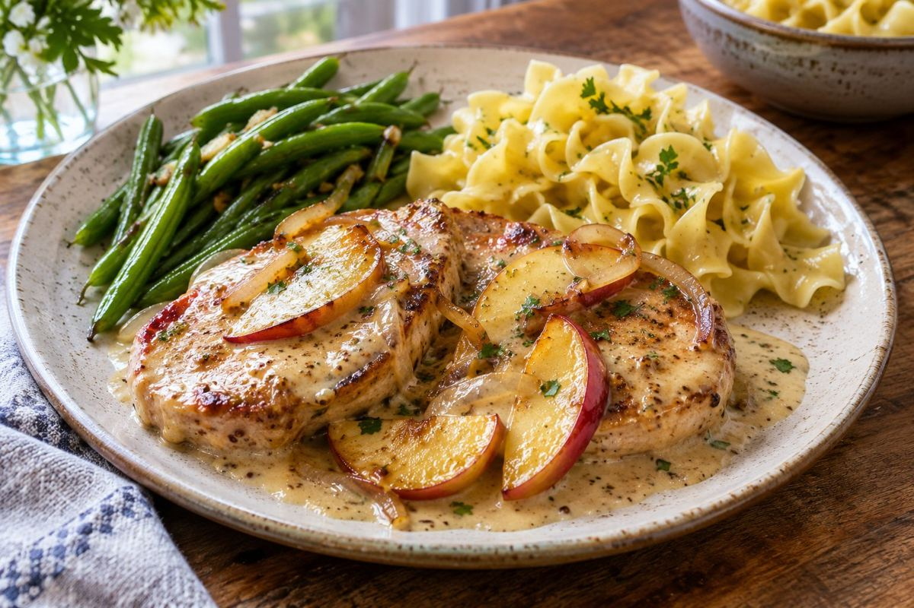

American · Dinner · Serves 4 · 35 min total
Creamy Dijon Pork Chops with Apples, Green Beans and Egg Noodles

Ingredient amounts are estimates when scaled. Original recipe and AnyList import remain unchanged.
Ingredients
- 4 boneless pork chops, about 6 oz each and ¾ inch thick
- 1⅓ tsp kosher salt, plus to taste
- ⅔ tsp black pepper
- 1 Tbsp plus 1 tsp olive oil
- 3 firm apples, cored and sliced
- 2 Tbsp plus 2 tsp butter, divided
- 3 garlic cloves, minced
- 1 cup chicken broth
- 2 Tbsp plus 2 tsp Dijon mustard
- ¼ cup plus 1 Tbsp plus 1 tsp heavy cream
- ⅔ tsp dried thyme
- 11 oz dry egg noodles
- 16 oz green beans, trimmed
Instructions
- Bring a large pot of salted water to a boil. Cook noodles according to package directions, adding green beans during the final 4–5 minutes or cooking separately to preferred tenderness. Drain and toss with 1 Tbsp plus 1 tsp butter; season to taste.
- Pat pork dry and season with salt and pepper. Heat olive oil in a large skillet over medium-high heat. Working in batches if needed, sear chops about 3–5 minutes per side, until the centers reach 145°F. Transfer to a plate and rest at least 3 minutes.
- Reduce heat to medium. Add remaining 1 Tbsp plus 1 tsp butter and apples; sauté 4–6 minutes until tender but still holding their shape. Add garlic and thyme; stir 30 seconds.
- Add broth and scrape up browned bits. Stir in Dijon and cream; simmer gently 2–3 minutes until slightly thickened. Return chops and their juices to the sauce briefly to warm through. Taste for salt and pepper. Serve with apples, green beans and noodles.